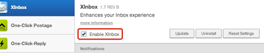
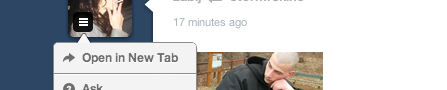
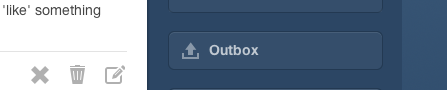
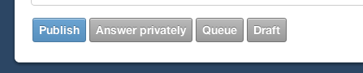

XKit Tips
Blog like a pro
Reply to notifications
Hover over a notification, and click on either
the Reply button or the arrow to create a new post
containing the notification to reply to it.
Reply to multiple notifications at once
Hold down the ALT key while
clicking on notifications to select/deselect notifications. When
done selecting, let go of the ALT key and
click on a reply button/icon to create post containing
all the selected notifications.
Get new extensions
Click on the XKit control panel icon ( on the
top-right of the screen) then click on Get Extensions tab
to download new extensions. Some tips on this page
require you to install new extensions.
Disable/Enable Extensions

You can easily enable/disable extensions by going to
→ My XKit, selecting an extension
then toggling the checkbox shown.
Disable Notifications
The News section of XKit is regularly updated to
let you know which which new
features / extensions were added, and other XKit
related news (surveys, polls, etc). Although not
recommended, you can turn them off by going to→ Other → News Notifications and unchecking the checkbox on the bottom.
Speed up XKit
Some extensions or features of XKit can slow down
your computer, especially if you have a slow computer
or internet connection. Disable the extensions you don't
use often (especially ones which have a yellow warning bar)
and features (especially the ones with a Turtle icon) to
speed XKit up.
Block posts you don't like
Click on the Post Block button to prevent
a post from appearing on your dashboard.
Requires PostBlock to be installed
View Tags
Wonder what tags people added to a post? Click
on the TagViewer icon to see all of them at a glance.
Requires TagViewer to be installed
Tag your asks
You can add tags using XInbox to your asks
before publishing them. You can also add custom tags
for all your posts (ie: "Xenixlet Answers!"). Click on the
→ My XKit → XInbox to add custom tags (and toggle
more features such as Slim Fan Mail)
Add Timestamps to posts
Install Timestamps from the gallery to get a
timestamp on each post. Make sure your Timezone setting
on your Tumblr settings page is correct, incorrect Timezone
setting can cause Timestamps to show wrong date/time.
Requires Timestamps to be installed
Keep the tags while reblogging
Install AutoTagger from the gallery, then
go to → My XKit → AutoTagger
and click on "Keep original tags when I'm reblogging a post"
to keep the post's tags while reblogging it.
Requires AutoTagger to be installed
Browse in public
You can use the button on the
sidebar or the ALT + X key
combination to enable/disable CleanFeed. Images will
be hidden until you hover over them so you can browse
Tumblr in public without worrying about NSFW stuff.
Requires CleanFeed to be installed
Get more user options

Install User Menus+ to get the old user menu back,
and options such as avatar magnifier and Likes button.
Requires User Menus+ to be installed
Save outgoing fan mail / replies

Install Outbox to save the last 20 fan mail you've sent
and replies to asks you've received.
Requires Outbox to be installed
See what you've blogged before
Go to → My XKit → One-Click Postage and
enable AlreadyReblogged. From then on, the posts you've
queued, drafted and reblogged using One-Click Postage's
popup window will have a green Reblog icon next time you see them.
Note that this does not apply to posts reblogged using Tumblr's
window.
Dim the posts you've seen before
Read Posts dims the posts you've already seen before,
so you can just scroll by them. Requires Read Posts to be installed
Wrap tags for easier reading
Go to → My XKit → Tweaks and
enable Wrap Tags. From then on, the tags on the posts
will wrap so you can read them without dragging them.
Tweaks also has a lot of other features like the ability
to hide the Radar, notes, slim block quotes and more.
Theme your dashboard
Go to → My XKit → Themes to select
a theme for your dashboard. Themes are added from time to
time, so make sure to follow the XKit Blog to be notified when
new themes are available to use.
Requires Themes to be installed
Create a theme
If you have Themes installed,
go to → My XKit → Themes and disable it,
then click on the Edit Theme button on your dashboard
to start designing your own theme. CSS knowledge is required
to design themes. If you do not know CSS, do not install
Theme Editor.
Requires Theme Editor to be installed
Create an extension
Go to
→ Other → XKit Editor to open
XKit Extension Editor to start writing your own extension.
Advanced Javascript knowledge is needed. Be careful,
and stay away from the Editor if you do not know Javascript
or how XKit works, you can break something. Check the
XKit Developer Wiki to learn more.
Create bookmarks
Click on the bookmarker icon on posts to bookmark
a post. Bookmarked posts will appear on your sidebar.
Click on your bookmarks while holding the ALT
key to rename or delete them.
Quickly Draft / Queue asks

Go to → My XKit → XInbox and enable
"Show Queue and Draft buttons" to enable this function.